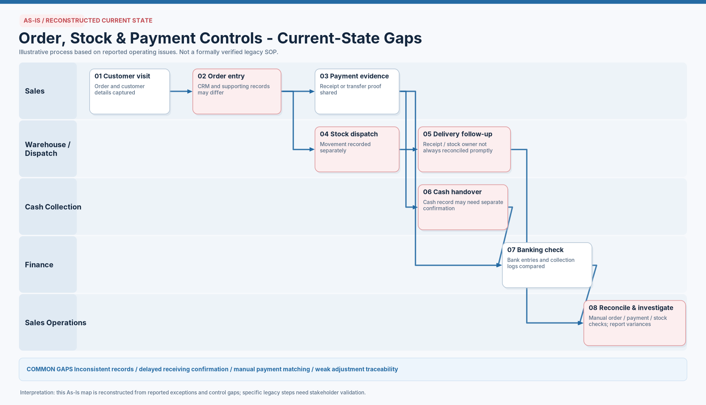
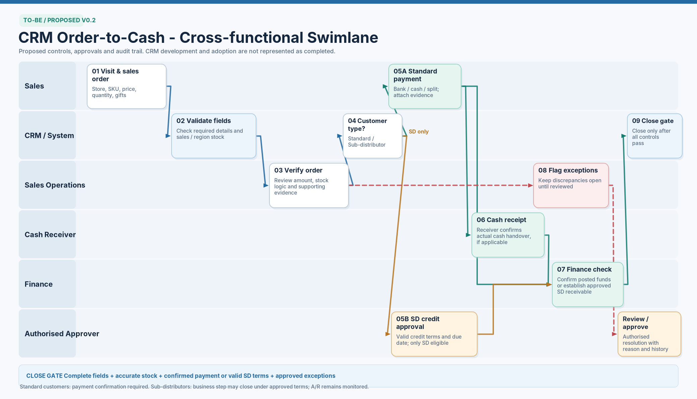

Process design · Proposed v0.2
CRM Order-to-Cash
Process Design
Mapping the gaps between sales orders, stock movements and payment records, then proposing who checks what before an order can close.
- Process mapping
- CRM requirements
- Cross-functional controls
The As-Is map reconstructs reported operating issues; it is not a verified legacy SOP. The To-Be map is a proposal for discussion, not a completed CRM implementation.
The problem behind the maps
Order details, stock movements and payment evidence can sit in different records. When those records disagree, Sales Operations has to reconstruct what happened across Sales, Warehouse and Finance.
These swimlanes make the handovers visible. The proposed process adds named checks, a separate credit-approval route and a clear condition for closing the business step.
- Scope
- Orders, stock and payment controls
- Deliverables
- As-Is and To-Be swimlanes
- Formats
- PNG · PowerPoint · draw.io
AS-IS · RECONSTRUCTED
Where the records can diverge
The current-state map follows the order from a customer visit through dispatch, collection and reconciliation. Highlighted steps show reported gaps that need stakeholder validation.

Read the As-Is process in text
- Sales — Customer visit. Capture customer and order details.
- Sales — Order entry. CRM and supporting records may differ.
- Sales — Payment evidence. Share a receipt or transfer proof for the payment checks.
- Warehouse / Dispatch — Stock dispatch. Record the stock movement separately.
- Warehouse / Dispatch — Delivery follow-up. Receipt and stock ownership may not be reconciled promptly.
- Cash Collection — Cash handover, if used. The cash record may need separate confirmation.
- Finance — Banking check. Compare bank entries and collection logs; bank-transfer evidence can feed this check directly.
- Sales Operations — Reconcile and investigate. Compare order, payment and stock records manually and report variances.
Stock and payment checks run along separate paths. This list explains the numbered steps; it does not imply that every order follows one linear sequence.
TO-BE · PROPOSED V0.2
Checks before closure
The proposal separates standard payment from approved sub-distributor credit and assigns checks to the CRM, Sales Operations, the cash receiver and Finance.

Proposed close gate
Complete fields and accurate stock, plus either confirmed payment or valid SD terms, with any exceptions approved.
Standard customers require payment confirmation. For an approved sub-distributor, the business step may close under agreed credit terms while Accounts Receivable remains monitored.
Read the To-Be process in text
- 01 · Sales — Visit and sales order. Capture the store, SKU, price, quantity and gifts.
- 02 · CRM / System — Validate fields. Check required details and sales or regional stock.
- 03 · Sales Operations — Verify order. Review the amount, stock logic and supporting evidence. Flag discrepancies for review.
- 04 · CRM / System — Customer type. Distinguish standard customers from sub-distributors.
- 05A · Sales — Standard payment. Record bank, cash or split payment and attach evidence.
- 05B · Authorised Approver — SD credit approval. For eligible sub-distributors only, approve valid credit terms and a due date.
- 06 · Cash Receiver — Cash receipt, if applicable. Confirm the actual cash handover.
- 07 · Finance — Finance check. Confirm posted funds or establish the approved SD receivable.
- 08 · Sales Operations — Flag exceptions. Keep discrepancies open until reviewed. An authorised approver records the resolution, reason and history.
- 09 · CRM / System — Close gate. Close only after the relevant controls pass.
Steps 05A and 05B are alternative routes. Cash confirmation applies when cash is used. The exception route still needs a defined return to verification before implementation.
From reported gaps to proposed controls
The intended change is to make checks and responsibility explicit before discrepancies are passed downstream.
| Reported gap | Proposed control | Responsible role |
|---|---|---|
| CRM and supporting records differ | Validate required fields, then review the order amount and supporting evidence. | CRM / System Sales Operations |
| Stock movements need separate reconciliation | Check stock logic during order verification and require accurate stock at closure. | Sales Operations CRM / System |
| Cash handover needs confirmation | Record receipt by the cash receiver, with a separate Finance check of posted funds. | Cash Receiver Finance |
| Payment matching relies on manual investigation | Distinguish confirmed standard payment from an approved SD receivable with a due date. | Sales Authorised Approver Finance |
| Adjustments have weak traceability | Keep discrepancies open for review and record the authorised resolution, reason and history. | Sales Operations Authorised Approver |
Before implementation
The maps provide a starting point for requirements discussions. The following work remains to be agreed and tested.
Confirm the workflow
- Validate the reconstructed As-Is with the people doing each step.
- Validate how the supporting dispatch and stock-transfer workflow connects to order checks and closure.
- Define approval permissions and how rejected or approved exceptions return to verification.
Test the controls
- Agree acceptance cases for bank, cash, split-payment and SD-credit orders.
- Check that missing evidence, invalid terms or unresolved exceptions prevent closure.
- Set a baseline for unmatched payments, unresolved exceptions and reconciliation time before a pilot.
The deliverable shown here is the process design. No completed rollout, automated CRM integration or measured improvement is claimed.
Project files
Each editable file contains three diagrams: the two maps shown above and a supporting stock-transfer and exception-control map. The PNGs are the supplied visual references; editable layouts may differ.